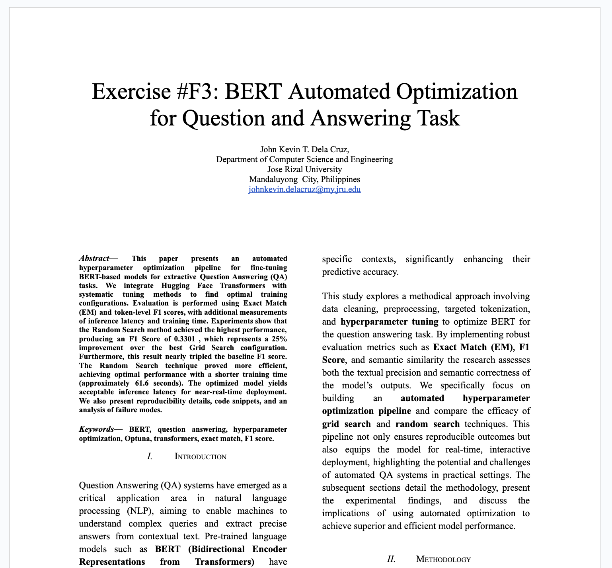
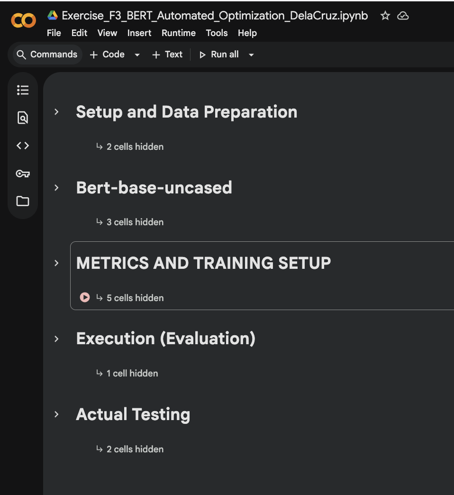

Exercise 3 IEEE Paper (.docx)
Exercise 3 IPYNB (.ipynb)
Exercise 3 Grid Search Experiment Logs (.xlsx)
Exercise 3 Random Search Experiment Logs (.xlsx)
Exercise F3: Automated Optimization (Week 16)
- During the completion of this exercise, I realized that I struggled at first to identify which hyperparameters would produce the best results for our BERT model. Learning and applying techniques like Grid Search and Random Search helped me a lot in understanding how to systematically find the most optimal hyperparameter values. These methods guided me in selecting the configurations that improved the model’s performance and made the tuning process more manageable.
- I also gained a deeper understanding of which automated optimization techniques are more suitable for our dataset, particularly Random Search. Based on my observations, Random Search was much faster and still produced strong results compared to Grid Search. Every time I tried running Grid Search, the session would crash due to its exhaustive nature, forcing me to restart the Google Colab environment and wait for the cooldown. In contrast, Random Search selects random combinations of hyperparameters and evaluates them based on the number of trials I set, making it more efficient in terms of time and resources. This experience helped me appreciate why Random Search is often preferred when computational resources are limited or when the search space is large.
- Reflecting on this, I acquired deeply knowledge about the automated optimization techniques. This learnings are highly relevant to my future career that I want to take, especially in Data Scientist or Machine Learning Engineering.